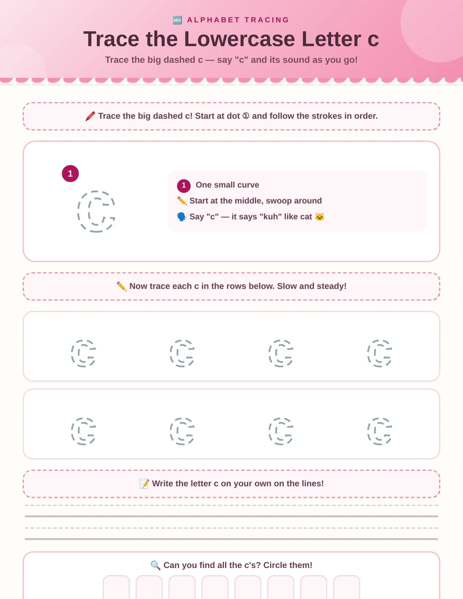

Lowercase Letter C Free Printable Lowercase Letter C Tracing Activity For Kids
Small c does more work than any capital: it is the c inside music, picnic and school, and the first letter of cat in every storybook. This free printable lowercase letter c tracing worksheet is a no-prep practice page for toddlers and preschoolers — print it at home and learn the letter c through play.
Quick Answer
This free printable helps toddlers and preschoolers practice tracing the lowercase letter c — the same open curve as capital C, drawn at half the size, sitting on the ground line and reaching only to the middle line. The worksheet includes large guided tracing lines, directional arrows, and fun practice rows. Print it at home as often as you like — no signup, no cost — and let repetition turn the little curve into fine motor skills and confident letter recognition.
At a Glance
- Ages: Toddlers and preschoolers
- Activity: Tracing lowercase c — the open curve of capital C at half the size
- Skills: Letter c formation and pencil control
- Format: Printable tracing worksheet (PDF)
- Cost: Free, no signup
✏️ Trace The Letter C
Use the printable to help your child trace the lowercase letter c, starting in the middle and curving around without touching the top line. Practice keeping the gap open — a closed small c turns into an o — and build confidence with early letter formation and writing skills.
Free Lowercase Letter C Tracing Printable

How To Use This Printable
- Download and print the letter c pages on letter-size paper. The print button opens the full-size page in a new tab if you prefer to print from there.
- Say the letter name and sound together before your child starts: “C says /k/, like cat, cow and cup — and in storybooks, those words start with this small c.”
- Trace the little curve slowly, starting halfway up. It should sit on the ground line and reach only the middle line — if it grows all the way to the top line, it has turned into a capital.
- Play I-spy with the letter c around the house — look inside words too, on cereal boxes and book covers: music, picnic, school.
🔤 All About Small c
Small c is the same open curve as capital C, drawn at half the size. It sits on the ground line and reaches only up to the middle line — it never touches the top line. Start in the middle, curve up and around to the left, sweep down, and stop before the ends meet. Just like its capital, small c has to stay open: close the gap and it turns into the letter o.
Most of the letters your child will ever read are lowercase, so this little c does the everyday work. It starts words like cat, cow and cup in storybooks, and it hides inside words too — there is a c in music, in picnic, and even in school. Pointing those out on signs and in books is an easy way to keep practicing after the tracing page is done.
Small c makes the same sounds as capital C — the hard /k/ in cat and the soft /s/ in city — only the size and the job are different: capitals start sentences and names, while small c carries the words in between.
Why Trace Lowercase Letters?
Children meet lowercase letters far more often than capitals — nearly every word in a storybook is lowercase — so small c earns its practice time. It is the same friendly curve as capital C at half the size, which makes it a gentle way to learn the ground, middle and top lines. Practicing the letter c also supports fine motor control, letter formation, and early handwriting development.
🎁 Keep Exploring Free Learning Activities
Discover more printable activities, toddler resources, and learning ideas created for busy parents.
🎁 View All Free Resources❓ Lowercase Letter C Tracing FAQ
Is this lowercase letter C tracing printable really free?
Yes — this lowercase letter c tracing printable is 100% free to download and print at home. No signup and no payment needed. Just tap the download button and print as many copies as you like — repetition is how the little curve becomes automatic.
What ages is this printable best for?
It is made for toddlers and preschoolers. Small c is a kind early letter because it is one short curve, though keeping it between the ground and middle lines takes a little practice. Little ones can enjoy it with a grown-up’s help, while older preschoolers can work on it more independently.
How can we practice the small letter c at home?
Say the letter’s name and sound as your child traces — /k/, like cat — and point out the small c hiding inside everyday words like music and picnic. Show how the same words look in a storybook, where the c is almost always small. A few short, playful sessions each week beat one long one.
🔗 More Free Printables You’ll Love
- Free Alphabet Coloring Pages Free printable alphabet coloring pages for little learners.
- Free Uppercase Letter C Tracing Free printable uppercase letter c tracing for little learners.
- Free Lowercase Letter D Tracing Free printable lowercase letter d tracing for little learners.
- Free Lowercase Letter E Tracing Free printable lowercase letter e tracing for little learners.